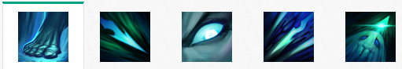

背景故事
卡莉丝塔是一个不灭的报复灵体，对所有告密者、欺诈者和背叛者都怀着一股寒彻人心的憎恨之情。生前，她是一位传奇战士，但在试图避免悲剧时，她被最为信任的那些人所背叛并击杀。现在，她是一个不死实体，会响应那些复仇的请求，但代价高昂：请求者的灵魂会被带走，并永远被她束缚。
技能介绍
武术姿态(被动)
如果卡莉丝塔在进行普攻或穿刺的同时被下达了移动指令，那么她会在发起进攻的同时朝着这个移动指令的方向位移小段距离。
掷出一根细长、快速的远程飞行道具，对命中的第一个敌人造成10/70/130/190/250(+1)物理伤害。触发武术姿态(被动)，哨兵(W)，撕裂(E). 如果击杀了一个目标，穿刺的飞行道具就会继续向前飞行，将撕裂效果的所有层数传递给下个目标。
- 伤害10/70/130/190/250<>
- 法力消耗50/55/60/65/70<>
哨兵
快捷键：W被动：当卡莉丝塔和她的誓约者用普攻击中了相同的目标时，她会造成相当于目标10/12.5/15/17.5/20%最大生命值的魔法伤害。10秒内无法重复作用于相同目标。 主动：派出一个灵魂哨兵去巡视一个不可见的地区。被发现的敌方英雄会被暴露4秒。哨兵持续7个来回。 卡莉丝塔每90/80/70/60/50秒获得一层哨兵充能。
- 触发伤害：10/12.5/15/17.5/20%<>
- 哨兵充能时间：90/80/70/60/50<>
撕裂
快捷键：E在未进入冷却阶段时，卡莉丝塔的长矛会刺穿她们的目标，并在目标身上停留4秒。 主动：将长矛从附近目标身上扯出，造成20/30/40/50/60(+0.6)物理伤害并减少目标25/30/35/40/45%的移动速度，持续2秒。每根额外的长矛会提升【撕裂】的伤害。 如果这个技能击杀了一个目标，那么撕裂的冷却时间会被重置，并且卡莉丝塔回复20法力值（每次施法最多回复两次）。
- 伤害：20/30/40/50/60<>
- 冷却时间：0<>
命运的召唤
快捷键：R将卡莉丝塔的誓约者拉向她。在最多4秒的持续时间里，誓约者不可被选取但进入平静状态。 誓约者可以通过鼠标点击来飞向目标区域，在命中第一个敌方英雄时停下，将小范围内的所有敌人击退，并将誓约者放置在一个与敌方间隔为誓约者自身最大攻击距离的地方。 卡莉丝塔与誓约者之间的距离必须在1400码内，才能使用这个技能。
- 冷却时间：120/90/60<>
- 击飞时长1.5/1.75/2<>
使用技巧
- 撕裂是一个有用的补刀手段，因为它会在击杀一个单位后重置冷却时间。
-进行一个触发了武术姿态的移动指令时，将不会清除掉卡莉丝塔的普攻目标。
- 由于她的被动技能，卡莉丝塔的移动速度会通过攻击速度而得到显著提升。
- 敌人使用复仇之矛
- 卡莉丝塔的机动能力取决于她的攻击。这意味着她在射程内没有敌人时，机动能力会很低，并且如果她的攻速被减慢了，那么她在一场战斗中的位移距离也会被降低不少。
- 卡莉丝塔无法取消她的普攻动作。虽然她的机动能力很优秀，但是如果你预测到她要开始攻击了，那么这个特点就会为你提供一次对她施放技能的时机。
-如果你可以脱离卡莉丝塔的视线（例如走进草丛），那么她对你进行的普通攻击就会落空，并掉到地上去。